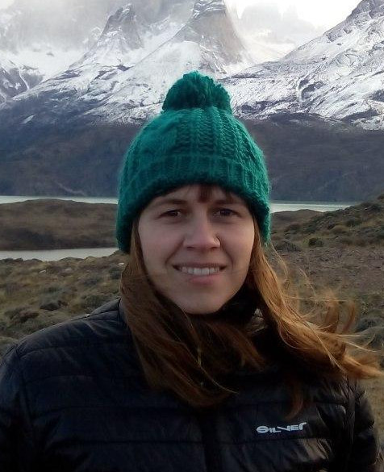

Education
- PhD, USC, 2014 - "Advances in air quality biomonitoring with the terrestrial moss Pseudoscleropodium purum". Cum laude and International Doctor Mention, Extraordinary Ph.D. award.
- BSc Thesis, USC, 2009 - "Harmonization of the moss technique: selection of the size of the sampling area". Cum laude.
- MSc, USC, 2007 - Master in Environmental Engineering.
- BSc, UVigo, 2005 - Biology Degree.
Positions
- 2026 – 2029 (expected) — Assistant Researcher, Universidade do Porto (Portugal)
- 2022 – 2024 — María Zambrano Postdoctoral Fellow, Ecology, Universidade de Santiago de Compostela (USC)
- 2022 — Visiting Researcher, University of Helsinki (Finland)
- 2018 – 2022 — PhD Grant-Xunta de Galicia, Ecology, USC
- 2016 – 2018 — PhD Grant-Xunta de Galicia, Universidade de Lisboa (Portugal)
- 2015 — PhD Grant, Universidad de Concepción (Chile)
- 2013 — Pre-doctoral Stay, University of Trieste (Italy)
- 2010 – 2014 — PhD Student, Ecology, Universidade de Santiago de Compostela (USC)